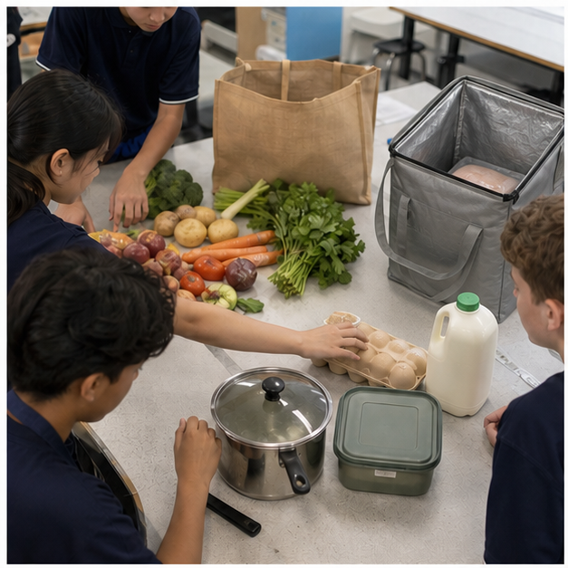
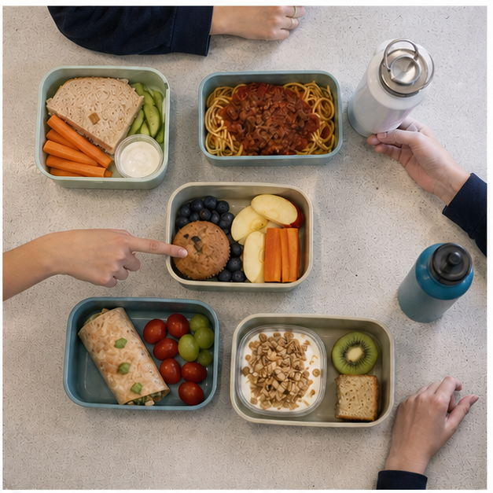
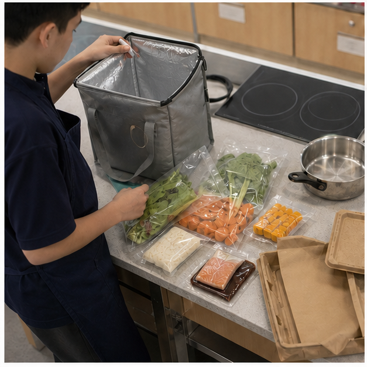
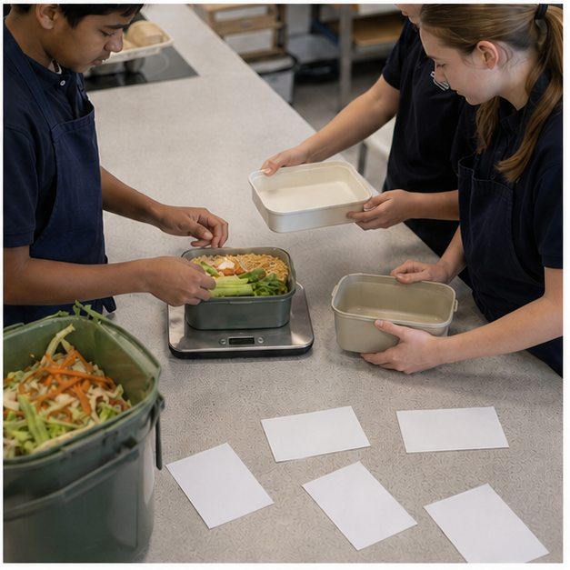

Class presentation
Module 5 — 8-slide lesson deck
Use the deck to introduce the three connected ideas, pause for decisions and hand evidence into the learning packages.

{kind=link}
Section 5.1
Australian food-consumption patterns
Learning intention: Interpret food-consumption evidence as a population pattern, distinguish it from an individual judgement and propose a proportionate design response.
Success looks like
- I can distinguish a population pattern from a claim about every Australian.
- I can interpret a comparison while checking its measure, group and time period.
- I can propose a realistic response that matches the evidence and acknowledges uncertainty.
A pattern is repeated evidence, not a label
A food-consumption pattern describes what a group tends to select, how often, in what amount or in which setting. Researchers may examine food groups, drinks, nutrients, meal locations or purchasing behaviour. A pattern can help schools, governments and designers see where support or innovation may be useful. It must not be used to label every Australian or judge one person's character, because group data always contains variation.

Start with what was actually measured
Before interpreting a statistic, ask what was measured, who was included, when data was collected and whether the evidence records usual behaviour, a single day, self-report or purchases. ‘Serves of vegetables eaten’ is not identical to ‘vegetables bought’, and household purchasing cannot reveal exactly what each person consumed. A clear title, unit, sample and date protect against turning a narrow measure into a sweeping claim.
Averages hide important variation
An average summarises a group but does not describe every member. Location, income, age, culture, food access, household structure and survey method can create different patterns within the national picture. A national result may still be useful, but the responsible wording is ‘the surveyed group tended to’ rather than ‘Australians always’. When a subgroup or local community is the design audience, broad national evidence should be combined with relevant local information.
Patterns change with systems and time
Food selection shifts as prices, product ranges, work and school routines, migration, advertising, technology and public guidance change. Convenience products and digital delivery can alter both availability and expectations about speed. Seasonal events or a major disruption can also change short-term behaviour. Comparing two dates is useful only when the measure and method are sufficiently similar; otherwise the apparent trend may partly reflect a change in how the data was collected.
Guidance is a comparison tool, not a moral score
The Australian Guide to Healthy Eating provides a pattern for selecting a variety of foods from five groups and describes discretionary choices separately. Comparing consumption evidence with this guidance can reveal a design opportunity, such as making vegetables or wholegrain options easier to access. It does not turn an individual meal into a pass or fail, and it does not erase cultural food patterns that can meet similar purposes in different ways.
Move from evidence to a proportionate response
A sound response matches the size and limits of the evidence. If reliable data suggests a group often has limited vegetable variety at lunch, a school food designer might test an appealing, affordable vegetable-rich option. The response should identify the audience, barrier, intended change and measure of success. It should not claim that one product will repair a national pattern or assume the barrier is lack of willpower when price, time, access or familiarity may be more important.
Equivalent pathway — no video required
Equivalent pathway: read a dietary-pattern claim
Purpose prompt: Identify the population, measure, time period and one limit before deciding what the pattern suggests.
Treat the reusable lunches as examples of individual meals, not population data. Use the current ABS data card in Applied activity 5.1 to identify population, measure, date and limits before writing one supported pattern statement and one claim the data cannot support.
Learning package 5.10/10 + response
Use each explanation to repair your thinking as you go. All work saves only in this browser on this device.
Knowledge checks
Long response
Response scaffold
- Identify the source, date, population, measure and unit.
- State one pattern using cautious group language.
- Explain two limits or kinds of variation hidden by the summary.
- Propose a small response matched to one plausible barrier.
- Describe how you would test whether the response helps the intended audience.
Quality criteria
- Claims stay within the measured evidence
- Averages and variation are interpreted accurately
- The response is targeted and proportionate
- Evaluation includes a meaningful success measure
Folio handoff: Save the annotated evidence excerpt and response proposal under Folio > Using population evidence. Open My folio.
0/10 checks saved · long response still needs detail
Resume this packageSection 5.2
Convenience, delivery and food technology
Learning intention: Investigate how processing, packaging, preservation and digital delivery change food access, safety, quality and choice, then evaluate a convenience option as a trade-off.
Success looks like
- I can explain a useful function of at least two food technologies.
- I can compare convenience options using more than speed or processing level.
- I can identify a food-safety control that remains important during delivery or storage.
Convenience has several forms
Convenience food can mean pre-washed vegetables, canned beans, frozen meals, meal kits, takeaway or food delivered through an app. The convenience may save planning, preparation, cooking, transport or clean-up. Processing level alone does not tell the full story: washing, freezing, canning and pasteurising can improve safety, shelf life or access. Evaluation begins with the user's purpose and the complete product, not with the assumption that homemade is always good and processed is always bad.

Food technology solves practical problems
Preservation technologies slow spoilage or reduce harmful microorganisms by controlling factors such as temperature, moisture, acidity or packaging atmosphere. Freezing slows microbial growth, canning uses heat and a sealed container, and pasteurisation applies controlled heat to reduce risk. These processes do not make food indestructible. Package integrity, storage instructions, dates and safe handling still matter after the technology has done its part.
Packaging protects and communicates
Packaging can protect food from contamination and damage, portion a product and carry ingredients, allergen declarations, nutrition information, storage directions and date marks. It can also create waste, add cost and use persuasive design. A responsible comparison reads the required information and considers whether the material and portion fit the intended use. A recyclable-looking symbol or natural colour palette does not by itself prove low environmental impact.
Delivery adds a chain of control
Food ordered online moves through preparation, packing, waiting, transport and handover. Potentially hazardous food must remain under suitable time and temperature control, and packaging should protect it from contamination. The customer also has a role: receive the order promptly, check obvious problems, follow storage directions and refrigerate food when required. A sealed bag improves tamper evidence but does not prove the food stayed at a safe temperature throughout the trip.
Digital platforms shape convenience
Apps reduce search and payment time, but their rankings, delivery fees, minimum orders, bundles and promotions influence which choices feel convenient. A low menu price may become expensive after fees, while a bundle may encourage more food than was intended. Platforms can expand access for some users and exclude others through cost, location, device access or limited listings. The technology should be evaluated as part of the food system, not treated as an invisible neutral tool.
Compare the whole trade-off
A strong convenience comparison uses criteria: nutrition information, ingredient and allergen needs, food safety, total cost, time, skills, portion, sensory appeal, packaging and waste. Different contexts can produce different defensible answers. Canned legumes may be a highly useful low-cost shortcut; a delivered meal may support someone without kitchen access; a meal kit may build skills but create extra packaging. The goal is not to eliminate convenience but to select and improve it responsibly.
Equivalent pathway — no video required
Equivalent pathway: follow a delivered meal
Purpose prompt: At which stage could time, temperature, contamination, cost or packaging change the quality of the final choice?
Use the insulated meal-kit image to identify one convenience stage, one benefit, one control and one trade-off. Then order the written source-to-eating stages in Applied activity 5.2 and identify where safety, cost, access or packaging could change the outcome.
Learning package 5.20/10 + response
Use each explanation to repair your thinking as you go. All work saves only in this browser on this device.
Knowledge checks
Long response
Response scaffold
- Define the user's purpose, available time, facilities and constraints.
- Trace the technologies and handling stages in each option.
- Compare nutrition evidence, allergen suitability, safety, total cost, appeal, packaging and waste.
- Explain two important trade-offs rather than searching for a perfect option.
- Recommend one option and propose one improvement to reduce its main limitation.
Quality criteria
- Uses a complete set of relevant criteria
- Explains preservation or delivery mechanisms accurately
- Recommendation responds to the stated user
- Trade-offs and one realistic improvement are explicit
Folio handoff: Save the comparison matrix, delivery-chain annotation and recommendation under Folio > Technology and trade-offs. Open My folio.
0/10 checks saved · long response still needs detail
Resume this packageSection 5.3
Designing responsible food solutions
Learning intention: Use a food-design process to turn a defined need into an evidence-based solution, manage trade-offs and evaluate the result against explicit criteria.
Success looks like
- I can convert a need into measurable criteria and realistic constraints.
- I can justify design choices using nutrition, safety, appeal, access and responsibility evidence.
- I can evaluate a prototype honestly and propose a specific improvement.
A solution begins with a defined need
Food design is more than choosing an attractive recipe. It begins by identifying an audience, purpose and problem that food can reasonably address. ‘Make a healthy meal’ is too broad; ‘develop a portable lunch option that includes varied food groups, can be kept safely during the school morning and suits the stated budget’ gives the designer something to investigate and test. Unknown allergies, facilities, ingredients and school procedures must be confirmed rather than invented.

Criteria describe success; constraints set boundaries
Criteria are the qualities used to judge the outcome, such as sensory appeal, food-group variety, safe handling, total cost, portability or reduced packaging. Constraints are limits such as time, equipment, budget, ingredient availability and user requirements. A factor can act as both: a maximum cost is a constraint, while staying within that cost is a criterion for success. Writing these before selecting an idea reduces the temptation to change the rules after seeing the result.
Generate alternatives before committing
Designers produce several ideas so they can compare different ways to meet the brief. One idea might use a wrap, another a grain bowl and another a filled roll, but each should be checked against the same criteria. Early sketches, ingredient maps or quick sensory trials reveal problems cheaply. Copying the first popular online image can hide issues with serving, access, allergens, cost or safe storage.
Evidence turns a preference into a justification
A design decision becomes defensible when it connects a feature to the brief. Ingredient lists and nutrition panels can support comparison; the Australian Guide to Healthy Eating can support variety reasoning; food-safety guidance can support handling controls; user feedback can support appeal. ‘I like it’ is valid preference evidence but cannot represent the whole audience. Strong justification combines objective evidence with the intended user's stated experience.
Responsible design manages trade-offs
Food solutions rarely maximise every criterion at once. Individual packaging may improve portability yet increase material use. A highly perishable ingredient may improve sensory quality but require stronger cold control. A lower-cost substitution may alter texture. Ethical and environmental thinking asks where ingredients and packaging come from, what may be wasted and who can access the result. It does not rely on a single green label or assume the most expensive option is the most responsible.
Evaluation closes and restarts the process
Evaluation compares the prototype with the criteria using observations, measurements and feedback. Instead of ‘it was good’, report what happened: the filling remained contained, two tasters found the texture dry, the cost met the limit, or the package could not be resealed. Then propose a specific change and predict which criterion it should improve without weakening safety. Honest evaluation is evidence of design thinking, not an admission of failure.
Equivalent pathway — no video required
Equivalent pathway: walk through a design evidence cycle
Purpose prompt: At each stage, identify what new evidence helps the designer decide what to keep, change or confirm.
Use the prototype image to identify measurable criteria such as portion, packaging and waste. Arrange the written need–criteria–alternatives–prototype–test–improve cycle in Applied activity 5.3, attach evidence to each stage and justify one testable improvement.
Learning package 5.30/10 + response
Use each explanation to repair your thinking as you go. All work saves only in this browser on this device.
Knowledge checks
Long response
Response scaffold
- Translate the user brief into at least five criteria and three constraints.
- Generate two distinct concepts and compare them using the same evidence.
- Select one concept and justify its ingredients, handling, packaging and user fit.
- Identify two trade-offs, including one environmental or ethical consideration.
- Describe a prototype test and the evidence that would trigger an improvement.
Quality criteria
- Criteria and constraints are specific and traceable to the brief
- Decisions use nutrition, safety and user evidence
- Trade-offs are genuine and not hidden
- Testing and improvement are measurable
Folio handoff: Save the criteria matrix, two concepts, selection justification and test plan under Folio > Responsible food design. Open My folio.
0/10 checks saved · long response still needs detail
Resume this packageEnd-of-module review
Check, repair and save
- Revisit Australian food-consumption patternsContinue
- Revisit Convenience, delivery and food technologyContinue
- Revisit Designing responsible food solutionsContinue
Open this module’s Applied Learning Activities · Open its media pathways · Keep selected evidence in My folio